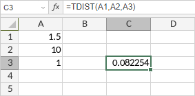

TDIST Funkcija
TDIST funkcija je jedna od statističkih funkcija. Vraća procentualne tačke (verovatnoću) za Studentovu t-distribuciju gde je numerička vrednost (x) izračunata vrednost t za koju se računaju procentualne tačke. T-distribucija se koristi u testiranju hipoteza za male uzorke. Koristite ovu funkciju umesto tabele kritičnih vrednosti za t-distribuciju.
Sintaksa
TDIST(x, deg_freedom, tails)
TDIST funkcija ima sledeće argumente:
| Argument | Opis |
|---|---|
| x | Vrednost na kojoj se funkcija izračunava. Numerička vrednost veća od 0. |
| deg_freedom | Broj stepeni slobode, ceo broj veći ili jednak 1. |
| tails | Numerička vrednost koja određuje broj repova distribucije. Ako je postavljeno na 1, funkcija vraća jednopojasnu distribuciju. Ako je postavljeno na 2, funkcija vraća dvopojasnu distribuciju. |
Napomene
Kako primeniti TDIST funkciju.
Primeri
Slika ispod prikazuje rezultat koji vraća TDIST funkcija.
